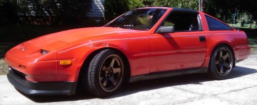

-
I've searched but can't find any info on the weights of the three z31 5-speeds. If anyone has weights for the FS5R90a FS5R30a and FSW71c, I'd greatly appreciate it.
EDIT. TRANSMISSION WEIGHTS ARE AS FOLLOWS:
84-89NA Manual FSW71c is 106lbs (Thanks 85NA2T)
84-86T Manual FS5R90a (T5) is 104lbs (Thanks matico40)
87-89T Manual FS5R30a is 119lbs (Thanks 1sickz)Started with Datsuns and L engines, Mikuni carbs. Now a 1968 Datsun 510: 2200lbs, RWD, IRS, 50:50wt. f/r
spy a VG30et.. a VG30ET 510?
Tube frame "done".
12/10: Interior sheetmetal, firewall done. Fuel + brake plumbing "done". Pulled it all out again to finish the "chassis". Briefly, it drove, then back to the shop.
1/11: rotisserie built: car BELLY UP
Will now attempt an aero underbody - best keep it simple!! I have no windtunnel -
104 lbs on a T-5 without any fluid, "polished" clean (so no extra weight from all the dirt), and the bellhousing included. -
OK, so Matico has stepped up with one of the weights. Gotta love reliable information like that (I'm willing to bet that 104 lbs, clean is an accurate weight, since you didn't just say "105 lbs"!) Thank you Matico.Started with Datsuns and L engines, Mikuni carbs. Now a 1968 Datsun 510: 2200lbs, RWD, IRS, 50:50wt. f/r
spy a VG30et.. a VG30ET 510?
Tube frame "done".
12/10: Interior sheetmetal, firewall done. Fuel + brake plumbing "done". Pulled it all out again to finish the "chassis". Briefly, it drove, then back to the shop.
1/11: rotisserie built: car BELLY UP
Will now attempt an aero underbody - best keep it simple!! I have no windtunnel -
i've carried the 90a and the 71c within 5 minutes of each other i'd say the 71c is a few pounds heavier. maybe 4-6lbs more. -
Couple days and I can weigh a 71c.
1985 Nissan 300ZX 2+2- My first Z, back in the family
1987 Nissan 300ZX Turbo RIP 4/87 - 4/28/2011
Under Construction: 1986 Nissan 300ZX NA2T Slicktop
Originally posted by Tempestas -
cool, I'm particularly curious about the 71c.TearingRaven wrote: Couple days and I can weigh a 71c.Started with Datsuns and L engines, Mikuni carbs. Now a 1968 Datsun 510: 2200lbs, RWD, IRS, 50:50wt. f/r
spy a VG30et.. a VG30ET 510?
Tube frame "done".
12/10: Interior sheetmetal, firewall done. Fuel + brake plumbing "done". Pulled it all out again to finish the "chassis". Briefly, it drove, then back to the shop.
1/11: rotisserie built: car BELLY UP
Will now attempt an aero underbody - best keep it simple!! I have no windtunnel -
71c is at 106 or so."If your car cant do a burnout from a 60mph rolling start, then your engine needs more work."
"Nitrous doesn't blow up motors; Idiots with nitrous blow up motors."
Shooting for 500whp

-
yeah. I have the picture somewhere…digital scale too :-)blueridgespeed wrote: OK, so Matico has stepped up with one of the weights. Gotta love reliable information like that (I'm willing to bet that 104 lbs, clean is an accurate weight, since you didn't just say "105 lbs"!) Thank you Matico. -
Thank you, guys!
Matico's got a t-5 weight of 104 lbs,
Tearingraven's got a 71c weight of 106 lbs.Started with Datsuns and L engines, Mikuni carbs. Now a 1968 Datsun 510: 2200lbs, RWD, IRS, 50:50wt. f/r
spy a VG30et.. a VG30ET 510?
Tube frame "done".
12/10: Interior sheetmetal, firewall done. Fuel + brake plumbing "done". Pulled it all out again to finish the "chassis". Briefly, it drove, then back to the shop.
1/11: rotisserie built: car BELLY UP
Will now attempt an aero underbody - best keep it simple!! I have no windtunnel -
[quote]matico40 wrote:The 30A is ~150 lbs. I should have mine off entirely with a couple weeks. If it hasn't been confirmed I'll weigh mine then.Originally posted by blueridgespeed545 RWHP & 540 RWTQOriginally posted by Andrew84zx
tell her your car is so fast it will make her panties fly off

-
I just picked up a 30A trans. I'll weigh it when I get home tonight. She's a big gurl, hope she doesn't break the scale. -
cool- the 30a was the last one we were waiting on weights of. I'm curious to see how the "big gurl" does on the scaleStarted with Datsuns and L engines, Mikuni carbs. Now a 1968 Datsun 510: 2200lbs, RWD, IRS, 50:50wt. f/r
spy a VG30et.. a VG30ET 510?
Tube frame "done".
12/10: Interior sheetmetal, firewall done. Fuel + brake plumbing "done". Pulled it all out again to finish the "chassis". Briefly, it drove, then back to the shop.
1/11: rotisserie built: car BELLY UP
Will now attempt an aero underbody - best keep it simple!! I have no windtunnel -
i think the 30a is 118Praying.... -
the 30A should weigh more than 118 lbs. I have one in my garage and i would say it's close to 140-150 lbs.Originally posted by michaelp -
I edited the first post so it's in there. We still need a confirmed weight on the 30a manual and the auto transmission.
I would guess the 30A is about 120-130lbs, based on bench-pressing it into and out of place numerous times… But I'd like to hear what the scale comes up with.

Copyright © 2006–. All rights reserved. Privacy Policy